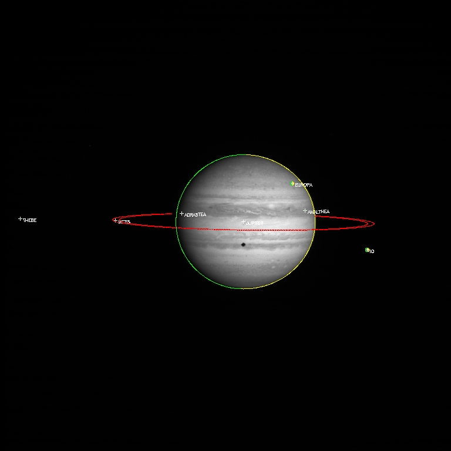

./
jupiter_example.pro
batch fileJUPITER EXAMPLE
Edited by Mark Moretto
June 2016
This example file uses an image of Jupiter, its rings, and satellites to demonstrate various capabilities of the OMINAS software. This includes fitting the limb and rings simultaneously, hiding the limb and/or rings wrt other objects in the field of view, plotting radial and longitudinal sectors on the ring and generating map projections.
This example file can be executed from the UNIX command line using:
ominas jupiter_example.pro
@jupiter_example
Read and display image

This first section uses dat_read to read in the image and then displays the image using tvim.
dat_read reads the image portion (im) and the label (label) and returns a data descriptor (dd) containing the image and label and information obtained through OMINAS' configuration tables. If a file exists in the same directory and with the same name as the image, except with the extension ".dh", then it is assumed to be a detached header and it is read as well.
The files w1352097259.1 and n1352037683.2 are Cassini wide- and narrow- angle frames of Jupiter. 2000r.img and 2100r.img are Galileo SSI images of Ganymede.
tvim is called to display the image (im) in a new window with the y coordinate as top-down:
file = getenv('OMINAS_DIR')+'/demo/data/N1350122987_2.IMG' ; Cassini Image
dd = dat_read(file, im, label)
tvim, im, zoom=0.75, /order, /new
Obtain descriptors
This section obtains the camera descriptor (cd), planet descriptors (pd), ring descriptors (rd), and the sun descriptor (sund) for use with subsequent commands:
cd = pg_get_cameras(dd)
pd = pg_get_planets(dd, od=cd)
rd = pg_get_rings(dd, pd=pd, od=cd)
sund = pg_get_stars(dd, od=cd, name='SUN')
NOTES
Because the detached header translator dh_std_input appears before the Cassini Spice input translator in the default translators table, the descriptors are taken from the detached header if it exists. If it doesn't exist, then they are obtained through the SPICE kernels.
The commented lines show how translator keywords can be passed to override the keywords given in the translators table.
The keyword 'name' could be used in pg_get_planets to select only Jupiter and the Galilean satellites. By default, every body that's relevant to the mission and can be found in the kernel list is returned. Also, the SPICE translator organizes the pd array such that pd[0] gives the primary target of the observation, if one exists.
The keyword 'name' is used in pg_get_stars to select only the Sun. Otherwise, star catalog stars would also be returned. Note, however, that the star catalog is still searched because it does appear in the translators table.
Create a generic descriptor
This line creates a "generic" descriptor. This is a convenience feature wherein several descriptors are grouped into a structure that can be passed to functions in one piece. The field names of a generic descriptor must follow the convention described in pg_description.txt:
gd = {cd:cd, gbx:pd, dkx:rd, sund:sund}
gbx - globe descriptor part
dkx - disk descriptor part
sund - sun descriptor part
Compute geometric features
These commands compute the limb of each planet, the edges of the Jovian ring system, and terminators on each planet:
limb_ptd = pg_limb(gd=gd) & pg_hide, limb_ptd, gd=gd, bx=rd, /rm
pg_hide, limb_ptd, /assoc, gd=gd, bx=pd, od=sund
ring_ptd = pg_disk(gd=gd) & pg_hide, ring_ptd, gd=gd, bx=pd
term_ptd = pg_limb(gd=gd, od=gd.sund) & pg_hide, term_ptd, gd=gd, bx=pd, /assoc
center_ptd = pg_center(gd=gd, bx=pd)
center_o=pnt_points(center_ptd[0]) ;get the center of Jupiter from the points object
print, center_o ;display the center of Jupiter
object_ptd = [center_ptd,limb_ptd,ring_ptd,term_ptd]
Set plot parameters
The colors, psyms, psizes and plables variables are defined for the plot. The center is drawn in the default color (!p.color), the limb is in yellow (ctyellow) and the inner and outer ring are in red (ctred). Here you can see that each ring is treated as two objects (inner and outer) when defining plot characteristics. With an 8-bit display, these color routines return the values that were previously reserved in the color table with ctmod; with a 24-bit display, these routines return the true color values for these colors. nlimb stores the number of points in the limb_ptd structure, nring, the number of points in the ring point structure. In plabels, the limb and ring's name is not plotted since it would be plotted at the center of the object:
ncent=n_elements(center_ptd)
nlimb=n_elements(limb_ptd)
nring=n_elements(ring_ptd)
nterm=n_elements(term_ptd)
colors=[make_array(n_elements(pd),value=!p.color), $
make_array(n_elements(pd),value=ctyellow()), $
make_array(2*n_elements(rd),value=ctred()), $
make_array(nterm,value=ctgreen())]
psyms=[make_array(n_elements(pd),value=1), $
make_array(n_elements(pd),value=3), $
make_array(2*n_elements(rd),value=3), $
make_array(nterm,value=3)]
psizes=1.0
csizes=0.75
plabels=[cor_name(pd), $
make_array(n_elements(pd),value=''), $
make_array(2*n_elements(rd),value=''), $
make_array(nterm,value='')]
Draw the limb, ring and planet center

This section draws the objects in the object array (center, limb, ring, and terminator) with the colors and plot symbols and labels defined earlier:
pg_draw, object_ptd, col=colors, psy=psyms, psi=psizes, csi=csizes, pl=plabels
First-cut Automatic repointing
Refine the pointing of the spacecraft by using pg_farfit, which searches the whole image for a pattern matching the edges calculated using the descriptors:
edge_ptd = pg_edges(dd, edge=10) ; Scan image for edges.
pg_draw, edge_ptd

dxy = pg_farfit(dd, edge_ptd, [limb_ptd[0]]) ; Try to correlate scanned edges with the computed limb. pg_repoint, dxy, 0d, axis=center_ptd[0], gd=gd ; Change the pointing. tvim, im pg_draw, object_ptd, colors=colors, psyms=psyms, psizes=psizes, plabel=plabels

center_ptd = pg_center(gd=gd, bx=pd) print, 'after automatic repointing, the center was shifted by:', pnt_points(center_ptd[0])-center_o, 'pixels'
Manually repoint the geometry
This pasteable section first clears the screen of the plotted points by redisplaying the image with tvim. It then calls pg_drag to allow the user to use the cursor to drag the pointing, and with it the limb, ring and planet center. To move the pointing with pg_drag, use the left mouse button and translate the pointing in x,y. Use the middle mouse button to rotate the pointing about an axis (in this case, the axis of rotation is set as the planet center (center_ptd[0]). When the desired pointing is set, the right mouse button accepts it. pg_drag returns the delta x,y amount dragged (dxy) as well as the rotation angle (dtheta). pg_repoint uses the dxy and dtheta to update the camera descriptor (cd, passed by gd). The limb and center is then recalculated, the image redisplayed to clear the objects drawn, and then pg_draw is called to replot:
tvim, im
dxy = pg_drag(object_ptd, dtheta=dtheta, axis=center_ptd[0]) ;Do the reponting
pg_repoint, dxy, dtheta, axis=center_ptd[0], gd=gd ;Modify the general descriptor
;Recalculate the geometry and redisplay the image with the new overlays
limb_ptd = pg_limb(gd=gd) & pg_hide, limb_ptd, gd=gd, bx=rd, /rm
pg_hide, limb_ptd, /assoc, gd=gd, bx=pd, od=sund
ring_ptd = pg_disk(gd=gd) & pg_hide, ring_ptd, gd=gd, bx=pd
center_ptd = pg_center(gd=gd, bx=pd)
term_ptd = pg_limb(gd=gd, od=gd.sund) & pg_hide, term_ptd, gd=gd, bx=pd, /assoc
object_ptd = [center_ptd,limb_ptd,ring_ptd,term_ptd]
tvim, im
pg_draw, object_ptd, colors=colors, psyms=psyms, psizes=psizes, plabel=plabels
Scan the edge to find the limb and use it to correct the pointing using least-squares.
This section calls pg_cvscan to scan the image around the predicted limb position and the ring edge position (within width of 80 pixels) and find the points of highest correlation with a given edge model for each object (edge_model_nav_limb = limb model used in the VICAR program NAV and edge_model_nav_ring = ring model from NAV) and zeropoint offset in the given model (lzero). These points are then plotted:
cvscan_ptd=pg_cvscan(dd, gd=gd, [limb_ptd[0]], edge=30, width=80, $
model=[make_array(nlimb,val=ptr_new(edge_model_nav_limb(zero=lzero)))], $
mzero=[make_array(nlimb,val=lzero)] )
tvim, im
pg_draw, cvscan_ptd
The commented command might be more appropriate for images in which the planet disk is quite small. In that case, we use a different edge model (because the nav model cannot be scaled) and we scan a much narrower region.
Threshold on correlation coefficient
This section calls pg_threshold to remove points with unacceptable correlation coefficients. The /relative flag means that the minimum and maximum thresholds are taken as a fraction of the maximum correlation coefficient for each set of points. In this case we use a minimun correlation coefficent of 0.81 and a maximum of 1.0:
pg_threshold, cvscan_ptd, min=0.81, max=1.0, /rel
tvim, im
pg_draw, cvscan_ptd
Removing regions of bad scan points
This pasteable section calls pg_select to remove points within a polygonal region as defined by the cursor. Click the left mouse button to mark a point and move the mouse to the next point and click. Use the middle mouse button to erase a point and the right mouse button to end the region. pg_trim removes the points in the just defined region. The scan points are then replotted. Repeat these statements for each region a user wants to remove:
region = pg_select(dd)
pg_trim, dd, cvscan_ptd, region
tvim, im
pg_draw, cvscan_ptd
Fit the pointing to the scanned points using least squares
This section calls pg_cvscan_coeff to determine the linear least-squares coefficients for a fit to the image coordinate translation and rotation that matches the computed curve to the scanned curve. It then calls pg_fit to do the fit with the calculated coefficients to calculate the correction in translation (dxy) and rotation (dtheta). It calls pg_cvchisq to get the chi square of the fit. Then calls pg_repoint to update the pointing. Recalculates the limb and center and replots. The determination of the curves and their subsequent fit can be iterated on.
Note that, as shown, dx, dy, and dtheta are fit. To fix any of these parameters use the 'fix' keyword to pg_cvscan_coeff. For example with 'fix=2', dtheta will be zero:
fix = [2]
cvscan_cf = pg_cvscan_coeff(cvscan_ptd, axis=center_ptd[0], fix=fix)
dxy = pg_fit([cvscan_cf], dtheta=dtheta)
chisq = pg_chisq(dxy, dtheta, cvscan_ptd, axis=center_ptd[0], fix=fix)
covar = pg_covariance([cvscan_cf])
print, dxy, dtheta*180./!pi, chisq, covar
pg_repoint, dxy, dtheta, axis=center_ptd[0], gd=gd
limb_ptd = pg_limb(gd=gd) & pg_hide, limb_ptd, gd=gd, bx=rd, /rm
pg_hide, limb_ptd, bx=pd, /assoc, gd=gd, od=sund
ring_ptd = pg_disk(gd=gd) & pg_hide, ring_ptd, gd=gd, bx=pd
center_ptd = pg_center(gd=gd, bx=pd)
term_ptd = pg_limb(gd=gd, od=gd.sund) & pg_hide, term_ptd, gd=gd, bx=pd, /assoc
object_ptd = [center_ptd,limb_ptd,ring_ptd,term_ptd]
tvim, im
pg_draw, object_ptd, colors=colors, psyms=psyms, psizes=psizes, plabel=plabels
Draw planet and ring latitude/longitude grid

This section calculates a latitude/longitude grid for each planet and a radius/longitude grid for the rings. By default it draws 12 latitude and 12 longitude grid lines. The longitude grid lines circle the body and so on a map they will appear as 24 grid lines. The ring radius grid uses four grid lines by default between the inner and outer ring radius. It uses pg_hide to set as not visible the points on the grid behind the planet and ring for both objects. It then uses pg_draw to draw the grid points in blue (ctblue):
grid_ptd = pg_grid(gd=gd, lat=lat, lon=lon)
pg_hide, grid_ptd, cd=cd, bx=pd, /assoc
pg_hide, grid_ptd, cd=cd, bx=pd, od=sund, /assoc
pg_hide, grid_ptd, gd=gd, bx=rd
pg_draw, grid_ptd, color=ctblue()
plat_ptd = pg_grid(gd=gd, slon=!dpi/2d, lat=lat, nlon=0)
pg_hide, plat_ptd[0], cd=cd, bx=pd[0], /, bx=pd
pg_draw, plat_ptd[0], psym=3, plabel=strtrim(round(lat*180d/!dpi),2), /label_p
plon_ptd = pg_grid(gd=gd, slat=0d, lon=lon, nlat=0)
pg_hide, plon_ptd[0], cd=cd, bx=pd[0], /assoc
pg_draw, plon_ptd[0], psym=3, plabel=strtrim(round(lon*180d/!dpi),2), /label_p
dgrid_ptd=pg_grid(gd=gd, bx=rd) & pg_hide, dgrid_ptd, gd=gd, bx=pd
pg_draw, dgrid_ptd, color=ctpurple()
Generate map projections
This section defines a map descriptor for a simple cylindrical projection using pg_get_maps. It then calls pg_map to create a map projection and uses tvim to display it in a new window. Four different map descriptors are demonstrated.
We also call pg_grid to calculate a latitude/longitude grid on the map and then pg_draw to draw the grid in green. For convenience, define a new generic descriptor. Note that the map descriptor is used for the cd field. Call pg_limb to calculate the limb on the map and then pg_draw to draw the grid in purple.
Mercator
Map descriptor:
md = pg_get_maps(/over, bx=pd[0], $
type='MERCATOR', $
fn_data=ptr_new(),size=[400,200])

Stereographic
Map descriptor:
md = pg_get_maps(/over, bx=pd[0], $
type='STEREOGRAPHIC', $
fn_data=ptr_new(),scale=0.5, $
size=[400,400], center=[!dpi/2d,0d])

Orthographic
Map descriptor:
md = pg_get_maps(/over, bx=pd[0], $
type='ORTHOGRAPHIC', $
fn_data=ptr_new(), $
size=[400,400], $
center=[!dpi/6d,!dpi])

Rectangular
Map descriptor:
md = pg_get_maps(/over, bx=pd[0], $
type='RECTANGULAR', $
/map_graphic,fn_data=ptr_new(),scale=1.0, $
size=[400,200])

Projecting the maps
Use the pg_map and the map descriptor to project the image onto a map. Certain regions, such as rings, could be excluded from the projection and bounds on the map can be set, if desired:
;to set projection bounds...
;bounds = [-30,30,-180,180]*!dpi/180d
mmap = 0
dd_map = pg_map(dd, md=md, gd=gd, bx=pd[0], map=mmap, bounds=bounds)
; to exclude areas covered by rings...
;dd_map = pg_map(dd, md=md, gd=gd, bx=pd[0], gbx=pd[0], $
; hide_fn='pm_hide_ring', hide_data_p=ptr_new(rd), map=map, bounds=bounds)
tvim, /new, mmap
For convenience, define a new generic descriptor. Note that the map descriptor is used for the cd field:
gdm={cd:md, od:cd, gbx:cor_select(pd,'JUPITER'), dkx:rd}
map_grid_ptd = pg_grid(gd=gdm, lat=lat, lon=lon)
plat_ptd = pg_grid(gd=gdm, slon=!dpi/2d, lat=lat, nlon=0)
plon_ptd = pg_grid(gd=gdm, slat=0d, lon=lon, nlat=0)
pg_draw, map_grid_ptd, col=ctgreen()
pg_draw, plat_ptd, psym=7, plabel=strmid(strtrim(lat*180d/!dpi,2),0,3), /label_p
pg_draw, plon_ptd, psym=7, plabel=strmid(strtrim(lon*180d/!dpi,2),0,3), /label_p
map_limb_ptd = pg_limb(gd=gdm)
pg_draw, map_limb_ptd, col=ctred()
map_term_ptd = pg_limb(gd=gdm, od=sund)
pg_draw, map_term_ptd, col=ctyellow()
Reproject the previous map
A map can be reprojected using a second map descriptor and the original map descriptor as the camera descriptor:
md1 = pg_get_maps(/over, bx=pd[0], $
type='ORTHOGRAPHIC', $
fn_data=ptr_new(), $
size=[400,400], $
center=[!dpi/6d,!dpi])
map=0
dd_map1 = pg_map(dd_map, md=md1, cd=md, map=map1, bounds=bounds)
tvim, /new, map1

Output the new state
This section shows how you can save your output.
Output descriptors
These commands write the descriptor information out through the translators. The exact behavior is translator-dependent. The detached header translator just modifies the detached header (stored in the data descriptor). The SPICE output translator writes a C-kernel if a file name is specified using the ck_out translator keyword (as in the commented line):
pg_put_rings, dd, od=gd.cd, rd=rd
pg_put_planets, dd, od=gd.cd, pd=pd
pg_put_cameras, dd, cd=cd
; cor_set_udata, cd, 'CK_COMMENT', 'This is a comment.'
; pg_put_cameras, dd, gd=gd, 'ck_out=./test.bc'
; print, spice_daf_comment('./test.bc')
pg_put_stars, dd, sd=sund, od=gd.cd
Write image file and header
dat_write writes the image file from the data descriptor. The detached header is also written into a file with the same name as the image file except with the extension '.dh'. If this file does not already exist, it is created:
split_filename, file, dir, name
dat_write, getenv('OMINAS_DATA')+'/' + name, dd
Write map file and header
pg_put_maps causes the detached header translator to generate a new detached header and write the map descriptor into it.
As above, dat_write writes the map image file and the detached header. Notice that the filetype is given explicitly because the data descriptor was not created by dat_read, which would have detected the filetype:
pg_put_maps, dd_map, md=md
split_filename, file, dir, name
dat_write, getenv('OMINAS_DATA')+'/' + name + '.map', dd_map, filetype = 'VICAR'
md = pg_get_maps(dd_map)
File attributes
| Modification date: | Tue Jul 18 11:30:24 2017 |
| Lines: | 151 |
| Docformat: | rst rst |